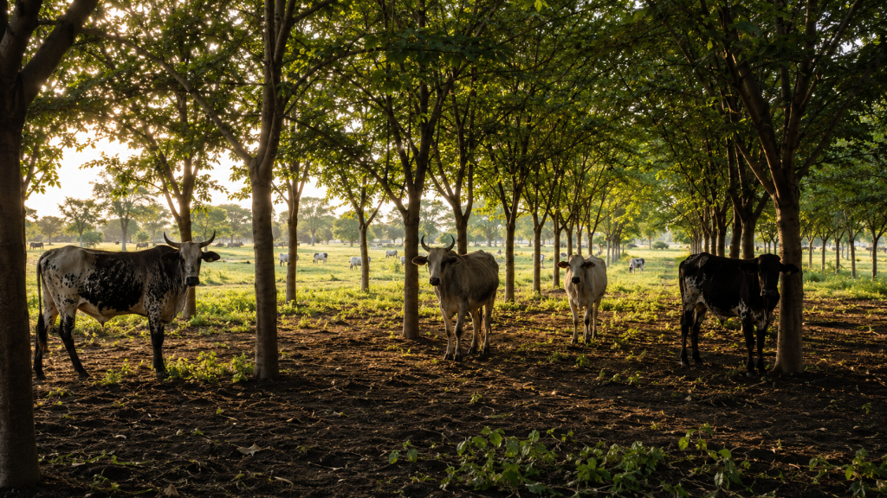

Your land is working. But it is only working once. Here is how to make it work three times from the same hectares.

Picture a dry season afternoon in the middle belt. The sun is flat and unforgiving. A herd of cattle are bunched under the only shade available, a single scraggly tree at the edge of the field, barely covering four animals while the rest stand in full sun, heads low, barely moving. The herder is resting. The cattle are not. Every hour they spend like that is quietly costing their owner money.
Heat-stressed cattle eat less, gain weight more slowly, produce less milk, and get sick more often. This is not bad luck. It is a design problem. And it is one of the most widespread, most quietly expensive inefficiencies on Nigerian cattle farms today, largely because most farmers have accepted it as simply the way things are.
Your land is earning once when it could be earning three times. There is a system that fixes the heat problem, improves your soil, feeds your cattle through dry spells, and grows a timber asset in the background, all from the same land you are already using. It is called silvopasture. The trees are not an expense. They are a second business growing quietly behind the first one.
Reality Check
Cattle grazing under managed tree canopy gain weight 10 to 15 percent faster than cattle on open pasture in comparable tropical conditions. That is not a bonus. That is money sitting uncollected on your farm every single season.
Which Trees to Plant
Plant the wrong trees and this whole idea will frustrate you. In Nigerian conditions, three categories have proven reliable. Fast-growing canopy trees like Gmelina arborea establish shade within three to five years and produce commercially valuable timber at harvest. Nitrogen-fixing species like Leucaena and Gliricidia improve pasture fertility without fertiliser and produce high-protein fodder leaves that become an emergency feed source during dry season shortages. Then there are slow hardwoods like Teak and Iroko, planted at wider spacing, growing quietly into the most valuable timber on your land over the long term. You will not harvest them next season. Your farm will not be the same without them.
How to Set It Up
Plant tree rows east to west across the pasture, with 10 to 15 metres between each row. This keeps grazing lanes wide enough for cattle and tractors while the east-west orientation casts the widest shade during peak midday heat. Within each row, space trees four metres apart, close enough to close the canopy within three years, wide enough to avoid root competition early on. Protect saplings with simple bamboo stake and wire mesh guards for the first two years until the trunk can manage cattle contact on its own.
Through the dry season, prune the nitrogen-fixing trees every six to eight weeks and feed the cut leaves directly to the herd. Divide the pasture into paddocks and rotate cattle on a 21 to 28 day cycle so the richest grazing zones have time to recover.
Reality Check
The farms that planted a decade ago are operating today with lower input costs, better cattle performance, and a timber asset their neighbours are still waiting to understand.
The next dry season is coming. Your cattle will either stand in the sun again or stand in the shade of something you planted. That decision belongs to you, and the time to make it is now.